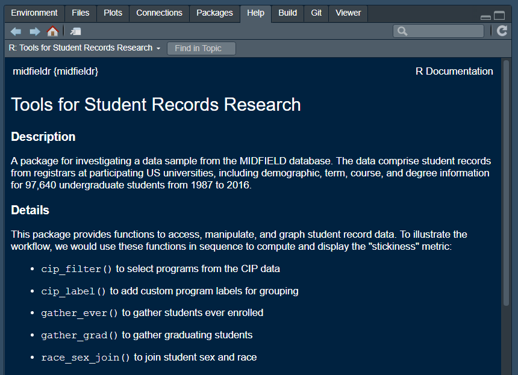

Getting started with R
If you already have R and RStudio installed, please update to the most recent releases and update your R packages as well.
If you are joining us for the first time, it is vital that you attempt to set up your computer with the necessary software in advance or it will be difficult to keep up.
Unless noted otherwise, we assume the reader is an R novice. Thus the first steps are to install R and RStudio.
Install R and RStudio


Windows users may have to login as an Administrator (localmgr) before installing the software.
- Install R for your operating system
- Install RStudio, a user interface for R
If you need additional assistance for Mac OS or Linux, these links might be useful
- Install R and RStudio on Mac OSby Michael Galarnyk (or you can Google more recent instructions)
- How to Install R Ubuntu 16.04 Xenial by Kris Eberwein (or you can Google more recent instructions)
Once the installation is complete, you can take a 2-minute tour of the RStudio interface. Please use headphones or ear-buds if you watch the video during the workshop.
- Let’s start (00:57–02:32) by R Ladies Sydney (Richmond, 2018)
The same video includes a longer (7 minute) tour of the four quadrants (panes) in RStudio if you are interested.
- The RStudio quadrants (07:21–14:40) by R Ladies Sydney (Richmond, 2018)
Install an R package
The fundamental unit of shareable code in R is the package. For the R novice, an R package is like an “app” for R—a collection of functions, data, and documentation for doing work in R that is easily shared with others (Wickham, 2014).
Most packages are obtained from the CRAN website (The Comprehensive R Archive Network). To install a package using RStudio:
- Launch RStudio
The RStudio interface has several panes. We want the Files/Plots/Packages pane.
- Select the Packages tab

Next,
- Click Install on the ribbon
- In the dialog box, type tidyverse
- Check the Install dependencies box
- Click the Install button
- Repeat to install the package devtools
Alternatively (for future reference), if you prefer using the command-line, you can install a CRAN package (or a vector of packages) by typing install.packages() in the Console, for example,
install.packages(pkgs = c("tidyverse", "devtools"))Some packages are archived in a repository other than CRAN, GitHub being a current favorite. For such packages, we use install_github() from the devtools package in this form,
devtools::install_github(repo = "user_name/repo_name") Install midfielddata and midfieldr


In this workshop, we work with the midfieldr package and midfielddata data-package. The midfielddata package is too large to be stored in CRAN, so we use a special “drat-repository” to make the package source files available. We install these packages by typing lines of code in the Console at the prompt.
The Console in the default RStudio pane layout is on the left. The R command prompt in the Console is >.

At the prompt, type a line of code and press Enter from your keyboard. Alternatively, you can copy a line of code from this page, paste it in the console, and press Enter. We only run these lines of code once, so you do not have to type the lines into a script.
Install midfielddata
Install midfielddata from the our drat repo. The data package is large so this step takes time. Be patient and wait for the Console prompt > to reappear.
install.packages(pkgs = "midfielddata",
repos = "https://MIDFIELDR.github.io/drat/",
type = "source")In the Console, load the package by typing,
library("midfielddata")If successful, the Console prompt > reappears. You should be able to view the midfielddata help page at this point by typing in the Console
? midfielddatawhich should show the help page in the RStudio Viewer pane,

Install midfieldr
midfieldr can only be installed if the midfielddata installation was successful.
devtools::install_github(repo = "MIDFIELDR/midfieldr") If you receive a message like this one, see the trouble-shooting notes below. Otherwise, continue.

If the midfieldr installation is successful, the Console prompt > reappears. In the Console, load the package by typing,
library("midfieldr")You should be able to view the midfieldr help page at this point by typing in the Console
? midfieldrwhich should show the help page in the RStudio Viewer pane,
Troubleshooting
If you receive a message like the one below, then midfieldr is not installed yet.
To respond to a message like this one,
- Press Enter to cancel
- Manually install the packages listed in the message using the RStudio Packages > Install pane or using
install.packages("package_name")in the Console
In this case, for example, I would type in the Console,
install.packages("digest")You can install multiple packages using a vector of package names, e.g.,
install.packages(c("package-name", "another-package-name", "next-package-name"))Next
- Attempt to install midfieldr again:
devtools::install_github(repo = "MIDFIELDR/midfieldr") - If the message reappears, manually install all packages listed.
- Repeat
Confirm the installation is successful by loading the package and checking the help page comes up.
library("midfieldr")
?midfieldrCreate an R project
To begin any project, we create an RStudio Project file and directory. You can recognize an R project file by its .Rproj suffix.
We will create a project named after the workshop, for example, midfield_institute.Rproj, fie_workshop.Rproj, etc.
If you prefer your instructions with commentary,
- Start with a Project (02:34–04:50) by R Ladies Sydney (Richmond, 2018)
If you prefer basic written instructions,
- RStudio, File > New Project… > New Directory > New Project
- Or, click the New Project button in the Console ribbon,
In the dialog box that appears,
- Type the workshop name as the directory name, for example,
midfield_institute,fie_workshop, etc.
- Use the browse button to select a location on your computer to create the project folder
- Click the Create Project button
Create directories
While file organization is a matter of personal preference, we ask that you use the directory structure shown here for your work in the workshop.
Create three folders in the project main directory, where your_project is the name you gave the project, foe example, midfield_institute or fie_workshop.
your_project/
├── data/
├── figures/
├── scripts/
└── your_project.RprojIf you prefer your instructions with commentary (please use headphones or ear-buds if you watch the video during the workshop),
- Make some folders (04:50–06:08) by R Ladies Sydney (Richmond, 2018)
If you prefer basic written instructions,
- use your usual method of creating new folders on your machine
- or you can use the New Folder button in the Files pane
We use the folders as follows:
datafor data filesfiguresfor finished data displays
scriptsfor R scripts that operate on data to produce results
And that concludes the setup.
References
Richmond J (2018) Basic Basics Lesson 1: An opinionated tour of RStudio. https://youtu.be/kfcX5DEMAp4
The Comprehensive R Archive Network https://cran.r-project.org/
Wickham H (2014) Advanced R. Taylor & Francis